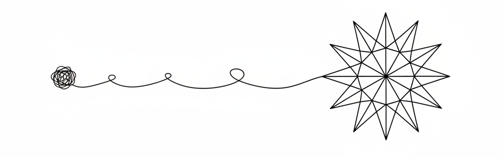

Sombras ao entardecer

Aquilo que chamamos de "nossos problemas" muitas vezes crescem dentro de nós como sombras ao entardecer: quanto mais o dia avança, maiores parecem ficar. Não porque realmente tenham aumentado, mas porque a luz diminuiu. A Bíblia nos ensina repetidas vezes que muitos dos nossos sofrimentos não são tão grandes quanto pensamos —o que os torna grandes, na verdade, é o nosso olhar que fica míope quando perde a refração da glória de Deus.
Jesus foi direto ao ponto quando disse: “Basta a cada dia o seu próprio mal” (Mt 6:34). Ele não negou que há problemas; apenas nos proibiu de acumulá-los, ampliá-los e projetá-los para além do que realmente são. Grande parte do peso que carregamos não vem da realidade, mas da antecipação ansiosa, do “e se”, do medo de cenários que sequer existem.
O salmista, acuado por inimigos reais, declara: “Engrandecei o Senhor comigo” (Sl 34:3). Note: não é o problema que deve ser engrandecido, mas o Senhor. Quando fazemos o contrário — quando engrandecemos o problema — Deus parece pequeno, distante, quase irrelevante. Mas isso é uma distorção da percepção, não da realidade. Deus continua sendo Deus; somos nós que encolhemos o campo de visão.
A Escritura também nos lembra que aquilo que hoje nos oprime é, muitas vezes, temporário e pedagógico: “Porque a nossa leve e momentânea tribulação produz para nós eterno peso de glória” (2Co 4:17). Paulo não chama o sofrimento de “leve” por sadismo espiritual, mas por comparação. Quando colocado diante da eternidade, até o fardo mais pesado perde proporção.
Além disso, quantas vezes sofremos por coisas que nunca acontecerão? O livro de Provérbios diz: “O coração ansioso deprime o homem” (Pv 12:25). Não é o problema em si que paralisa, mas o coração que o rumina sem descanso. A ansiedade é uma lente de aumento que deforma a realidade.
Deus, por sua vez, insiste em nos lembrar do básico: Ele governa até os detalhes mínimos. “Não se vendem dois pardais por um asse? E nenhum deles cairá em terra sem o consentimento de vosso Pai” (Mt 10:29). Se Deus cuida dos pardais, por que imaginamos que nossas crises escaparam do Seu controle?
Muitas vezes, o que chamamos de “grande problema” é apenas um chamado ao descanso, à confiança e à obediência simples. “Aquietai-vos e sabei que eu sou Deus” (Sl 46:10). A quietude não elimina o problema, mas o recoloca no lugar correto.
No fim, nossos problemas não diminuem porque os resolvemos todos, mas porque reaprendemos a olhar para eles à luz de quem Deus é. Quando Deus volta ao centro, os problemas retornam ao tamanho real — e descobrimos que não éramos tão frágeis quanto pensávamos, nem a situação tão definitiva quanto temíamos.
Às vezes, o maior milagre não é Deus mudar a circunstância, mas ajustar a nossa percepção. E, quase sempre, isso já é mais do que suficiente. ⏹